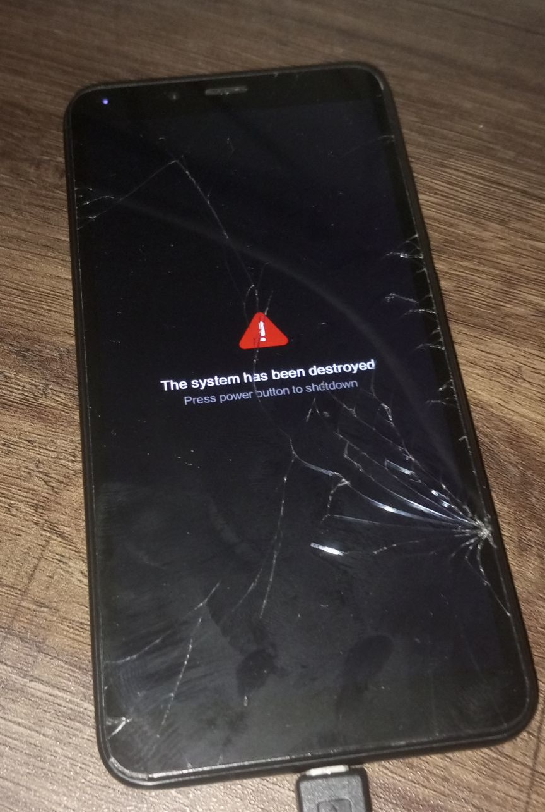

I have been wanting to get into deeper smartphone hacking for a while. Time and enough spare-devices lying around that I could risk bricking that making it viable had to wait until now.
I purchased my first Smartphone in 2011 or so - it was a tiny HTC Wildfire S. I think I used it for about 2-3 years or so until I had to abandon it for a more reliable phone when I moved to college. Android at the time was increasing hardware requirements every release, the Wildfire hit its limits quite fast. In order to squeeze some juice out of it I ended up having to flash custom ROMs. If memory serves me right, I successfully flashed a Clockworkmod recovery followed by a Cyanogenmod ROM through a .zip from the recovery. This happened circa 2012-2013. Back then, I was a consumer of what enthusiast people over at XDA did. My uncle had a Nokia N8, which I would help load multimedia content etc for. But it was painfully obvious Android will take over soon-enough, at least against N8’s Symbian. I vaguely remember modding the Xperia ZR that I had after the HTC Wildfire S. The strategy so far has been to wait till warranty expires, then do rooting and custom ROMs.
So - this time on, I’m less of a noob considering smartphone hacking. Some operating-system theory and sysadmin practical knowledge over the years equips me to be further fearless. The hacker who inspired courage efforts has since thrown in the towel for mobile linux. For the right reasons - I expect significant pain at figuring out the lower-level details that could alternatively be solved spending money instead of time.
One eventual goal is to become a producer in this ecosystem, than just a consumer. Working devices I have in hand currently are a Xiaomi Redmi 6 and a Tecno Pova 3. One is an old-abandoned device, the other my daily driver at the moment. I have no plans to use Redmi 6 except for development - can even risk hard-bricking it. So, onward.
Tecno Pova 3
The Tecno phone in my possession was an experimental buy. This is a 2022 release, and probably didn’t sell well in the Indian market. I googled for phones with maximum battery capacity (7000 mAh) and discovered this Phone. I had the funds to buy a Pixel if I wanted this time, but then I also thought - I can experiment with a mid-range phone, new manufacturer and swap to a Motorola which usually offers less adultered android in case the experiment does not pan out.
Looking back, I did read and ignore warnings about higher ads and bloatware on the Tecno HiOS, which I can confirm now to be true. Then, without much research, I thought I’ll flash LineageOS to get rid of HiOS and have something clean. Successful LineageOS install is proving to be more difficult than I expected, due to Original Equipment Manufacturer (OEM) kernel not being available.
Removing bloatware
I discovered some minimally invasive ideas to remove bloatware from the Tecno Pova 3. Android offers slightly better control without having to flip warranty-breaking switches these days, looks like. Makes sense to exhaust these ideas first.
I started off attempting things from a bunch of YouTube videos of folks describing how they got less ad-ridden phones. The process essentially boils down to:
- Find
com.transsion.*apps. Package Name Viewer is an option. - Find suspicious apps that we are possibly okay without.
- Clear cache/data for the app.
- Disable (via Android)
- Disallow overlays (to prevent banner ads)
- Disable Network Access.
- Clear cache/data for the app.
- There are non
com.transsion.apps as well, offending apps can be found on the internet.
These despite promising, did not work in the end. The offending apps were turning settings back on. It’s interesting that this cat-and-mouse game between manufacturer - end-user is still on.
Thankfully, there are still some adb options available. I tried the straightforward way:
$ adb uninstall com.transsion.smartpanel
Failure [DELETE_FAILED_INTERNAL_ERROR]
$ adb uninstall com.transsion.tecnospot
Failure [DELETE_FAILED_INTERNAL_ERROR]There are however, some advanced techniques people recommend over on Q&A sites and forums:
> adb shell
TECNO-LF7:/ $ pm list packages
package:com.google.android.networkstack.tethering
package:com.hilauncherconfig
package:com.google.android.ext.services
package:com.google.android.googlequicksearchbox
...
package:com.transsion.bluetooth
package:com.talpa.hiservice
package:com.transsion.phonemaster
...
TECNO-LF7:/ $ pm uninstall --user 0 tech.palm.id
TECNO-LF7:/ $ pm uninstall --user 0 com.zaz.translat
TECNO-LF7:/ $ pm uninstall --user 0 com.transsnet.store
...This appears to be working, so mission accomplished, I suppose. I can of-course try and take this further - to get LineageOS, near vanilla android, with much better control.
Unlocking bootloader
The first steps towards doing customization these days is unlocking the bootloader. The boot-process is multi-staged and has some verification mechanisms built in. In it’s essence, this is check the hash of the partitions that are involved in the next stage of the boot. Unlocking typically means to tell the software to not check for the hash at some point, so we can boot a partition different from what the vendor packaged.
This was not that hard on the Tecno Pova 3 (LF7). The device comes with fastboot. And all it takes is a command in fastboot.
fastboot flashing unlockOne banking application has since been unhappy with the tampering and refuse to open, they were probably only using WebView to display their web-backend anyway, so meh - will directly use it from Firefox.
Backups
Having a backup of whatever is in the storage gives some courage to try crazier stuff. This is because if something goes wrong in the non-critical parts, it is possible to just write back whatever existed before to get the functional phone back. I figure there are multiple methods to create such a backup.
The System-on-Chip (SoC) on this phone is MediaTek MT6768/MT6769 (Helio P65/G85 k68v1). The Redmi 6 in my possession also has a MediaTek SoC. I have found MediaTek has some nice tooling - SPFlash tool, and a popular mtkclient.
I tried using mtkclient, but it appears I am not able find much success at least for now. I tried a non-invasive printgpt and dump bootrom, but somehow the exploits do not seem to work on the device.
mtk printgpt
Port - Hint:
Power off the phone before connecting.
For brom mode, press and hold vol up, vol dwn, or all hw buttons and connect usb.
For preloader mode, don't press any hw button and connect usb.
If it is already connected and on, hold power for 10 seconds to reset.
......Port - Device detected :)
Preloader - CPU: MT6768/MT6769(Helio P65/G85 k68v1)
Preloader - HW version: 0x0
Preloader - WDT: 0x10007000
Preloader - Uart: 0x11002000
Preloader - Brom payload addr: 0x100a00
Preloader - DA payload addr: 0x201000
Preloader - CQ_DMA addr: 0x10212000
Preloader - Var1: 0x25
Preloader - Disabling Watchdog...
Preloader - HW code: 0x707
Preloader - Target config: 0x5
Preloader - SBC enabled: True
Preloader - SLA enabled: False
Preloader - DAA enabled: True
Preloader - SWJTAG enabled: True
Preloader - EPP_PARAM at 0x600 after EMMC_BOOT/SDMMC_BOOT: False
Preloader - Root cert required: False
Preloader - Mem read auth: False
Preloader - Mem write auth: False
Preloader - Cmd 0xC8 blocked: False
Preloader - Get Target info
Preloader - HW subcode: 0x8a00
Preloader - HW Ver: 0xca00
Preloader - SW Ver: 0x0
Mtk - We're not in bootrom, trying to crash da...
Exploitation - Crashing da...
Preloader
Preloader - [LIB]: upload_data failed with error: DAA_SIG_VERIFY_FAILED (0x7024)
Preloader
Preloader - [LIB]: Error on uploading da data
Preloader - Jumping to 0x0
Preloader - Status: Waiting for PreLoader VCOM, please connect mobile
Port - Hint:
Power off the phone before connecting.
For brom mode, press and hold vol up, vol dwn, or all hw buttons and connect usb.
For preloader mode, don't press any hw button and connect usb.
If it is already connected and on, hold power for 10 seconds to reset.
..........Preloader
Preloader - [LIB]: Status: Handshake failed, retrying...
While the mtkclient efforts are intended to take backups, one idea is to eventually extract the boot.img etc which allows to use twrpdtgen to extract the device-tree. It will also allow me to unpack the boot.img to find the KConfig used to compile the kernel. I do not have the source-code, but more clues are hopefully there to find a close relative of a phone. It should also be possible to use the pre-compiled kernel to power a not-so-nice LineageOS installation, I am told.
For now, I’m stuck. I’m trying to correpond with the mtkclient library author for some help at bkerler/mtkclient#778. What appears to be more popular - the SPFlashTool requires Windows, I don’t have an installation at the moment.
The Tecno Pova 3 is more usable and less intrusive due to ads now, so I have some degree of success in gaining further control over my device.
LineageOS?
I spent some time in the LineageOS channel trying to setup AOSP a few months back. I tried the basic setup and things - my new machine could compile LineageOS code quite fast. One of the requirements from the LineageOS communities appeared to be the OEM kernel sources. Knowing about the Generic Kernel Image (GKI) Project could have helped. However, my phone, despite being recent I think shipped with a 4.x kernel (GKI applies to devices launching with > 5.4). I find myself at the mercy of the vendor, and when they eventually release the sources.
Let’s hope some open-sourcing eventually happens, I’ll prepare a bit in any case.
PostmarketOS appeal
If the device-manufacturer, in my case, Transsion - Tecno, does not provide OEM Kernel sources in open-violation of the GPL, the idea of mainlining suddenly becomes attractive. I’m being naive and optimistic here, as the Tecno phone also has hardware that are unique (front camera LED, Fingerprint sensor) and a newer chip not available in mainline (MT6768/MT6769). The mainline kernel would add support across devices, so if someone else using same SoC releases kernel sources I might be able to use it to boot at least. Telephony and specialized hardware would be far behind still.
Now, porting to a new device walkthrough mentions requiring the downstream kernel source-code. Since I don’t have it for the Pova 3, might as well start with the Xiaomi. This is under an optimistic assumption that eventually I should be able to unlock the bootloader. I expect a few hurdles in compiling the kernel with Postmarket infrastructure, and me learning the parts - so let’s clear that to begin with.
Xiaomi Redmi 6
Xiaomi Redmi 6 (codename cereus) appears to have been ported to LineageOS and in use. Makes sense, because Xiaomi has open-sourced the kernel. The following are available online:
Building LineageOS should be possible. Some high-end machines could help ease the compile, and I have one. PostmarketOS is recent and I’ve been wanting to try out for fun. There are some overlaps in the communities in terms of skill, resources required and possibly enthusiasts.
For a change, I will try how PostmarketOS sees things. The PostmarkertOS Wiki appears far better and developer-oriented and the community much more welcoming to noob questions on Matrix/IRC.
Unlocking bootloader
As we saw before during the inspection and backup efforts for the Pova, mtkclient provides a friendly interface to unlock the bootloader across a wide variety of devices with MediaTek SoCs. Redmi 6 is an old phone, and the chip appears to be well supported.
I ran through the instructions in bkerler/mtkclient#unlock-bootloader. Things appear to be going well, on the surface.
$ python mtk printgpt
$ python mtk e metadata,userdata
$ python mtk da seccfg unlock
$ python mtk resetBackups
Since PostmarketOS installation process will write to boot.img and system.img, sensible thing to do is to take backups in case something goes wrong. It’s risky to use stock-firware found in arbitrary websites on the internet.
$ python mtk printgptThis reveals the boot, system and vbmeta partitions (at least). It’s safe to take backups of other partitions as well, just in case. Storage is cheap. But not userdata and cache, that can be wiped and cleaned without risk. These are where data is stored, so it’ll take longer to back this up over the USB-2.0 connection (nearly 4 hours compared to 15 minutes on my setup).
PARTITIONS=(
boot
vbmeta
system
)
mkdir -p export
for partition in ${PARTITIONS[@]}; do
python mtk r $partition export/$partition.img
done;Building PostmarketOS
The PostmarketOS ecosystem was nicer than I expected it to be - wiki, tooling, matrix channels. I used pmbootstrap to initialize a workspace, new device port according to the instructions.
Extracting Kconfig
Being a newbie, I started from some config I found in the public source-repository - xiaomi-mt6765/android_kernel_xiaomi_mt6765 and tried to play around until I got compilation to work. But there is a better way. Given I have mtkclient working for the Redmi 6, I can use it to extract the boot.img partition, and from the compiled kernel the config used to compile. Somebody in #porting:postmarketos.org helped me out soon as I supplied the boot.img, for the sake of completeness and my own learning I redo the steps below:
extract-ikconfig, a utility available in the linux repository enable inspecting the kernel for the config it was compiled with.
$ extract-ikconfig export/boot.img > export/config.linux-xiaomi-cereus.armv7Steps
$ pmbootstrap init
$ pmbootstrap checksum device-xiaomi-cereus
$ pmbootstrap checksum linux-xiaomi-cereus
$ pmbootstrap kconfig check
$ pmbootstrap kconfig edit
$ pmbootstrap build linux-xiaomi-cereus
$ pmbootstrap installFlashing boot.img
To check it suffices to flash boot.img - i.e, overwrite the /boot partition with the generated boot.img.
$ python mtk w boot /path/to/boot/boot.imgFingers crossed.
Revenge of the bootloader
I powered-up the device. The device started vibrating funny, and long. One person helping me out in the channel hypothesised this could be a positive, since the kernel was designed to light and LED or vibrate indicating it booted. This raised my spirits, but only for a short while. Sadly, turns out I never enabled these hooks - which meant something was very, very wrong.
The standard check is to connect to USB and see if the device is getting recognized:
[246083.382812] usb 1-3: new high-speed USB device number 42 using xhci_hcd
[246083.523263] usb 1-3: New USB device found, idVendor=0e8d, idProduct=0003, bcdDevice= 1.00
[246083.523285] usb 1-3: New USB device strings: Mfr=0, Product=0, SerialNumber=0
[246083.526879] cdc_acm 1-3:1.0: ttyACM0: USB ACM deviceThis is just MediaTek stuff, nothing regarding the device.
Find the visuals of the phone vibrating:
This was obviously bad, but silver lining is room for learning more nuances. MediaTek SoCs write the boot logs to a partition called expdb.bin. In order to inspect the expdb.bin without any contaminations from prior boots, I was told I had to first erase it by writing out 0s.
$ python mtk e expdb
$ python mtk resetNow I booted again to see the phone vibrate. Then I got it into bootrom once again. Time to inspect the logs.
$ python mtk r expd expdb.binPoking a bit further, produce the logs to the experts and I got pointed to the offending parts causing the kernel to panic below:
[67] [LK] fdt setup addr:0x47880000 status:0!!!
[67] setup_fdt fail, ret: 0x0!
[67] real mdtbo index=0
[69] fdt_open_into failed
[69] [SEC_POLICY] reached the end, use default policy
[69] [SEC_POLICY] sboot_state = 0x1
[69] [SEC_POLICY] lock_state = 0x3
[70] [SBC] image dconfig-dt auth init fail (0x6003)
[70] dconfig image cert verify failed
[70] panic (caller 0x48022b8f): ASSERT at (app/mt_boot/bootargs.c:96): fdt_bootargsfdt stands for flattened device tree. This the device tree blob (dtb) and the device tree blob overlay (dtbo) combined. Therefore the bootloader is complaining about something to do with the dtb. I guess the hardware was configured to vibrate in case of an inability to boot.
One suggested way to solve this problem was to get the dtb from the working device and swap-in. However, I had a feeling was this was due to some misconfiguration in the KConfig where I remembered having to make a few more changes than necessary to compile this kernel. I tracked down the problem - I was working with an aarch64 config instead of an armv7 config, I figured since MT6762 supported aarch64, that would be the architecture to compile for - turns out I was wrong.
Having found the root of the problem, I changed the config to armv7, generated a fresh boot.img. Ready for the moment-of-truth.

oops!
Inspecting the logs this time, we find:
[618] [PROFILE] ::: lvl(2) logo verify takes 53 ms
[618] [SEC_POLICY] reached the end, use default policy
[619] [SEC_POLICY] sboot_state = 0x1
[619] [SEC_POLICY] lock_state = 0x3
....
[926] RSA_padding_check_PKCS1_type_1 failed ret:-1
[926] token sig decrypt failed:-2
...
[935] [SEC_POLICY] sboot_state = 0x1
[935] [SEC_POLICY] lock_state = 0x4
[935] [avb] img_auth_required = 1
[936] avb_slot_verify.c[936] :[936] 637[936] : ERROR:
[936] vbmeta[936] : Error verifying vbmeta image: [936] OK_NOT_SIGNED[936]
[936] [avb] boot/recovery vfy time = 6 ms
[936] mblock_create mblock start b9b70000 size: 6400000
[936] [avb] avb_ret = 3
[937] [LK] check_ota_result = 0
[937] [LK] ota-fail
[937] fb dump: 0xff000000, 0xff000000, 0xff000000, 0xff000000
dm-verity error
Android system on your device is corrupted.
Device will boot in %ds
[5939] boot state: red
[5939] fb dump: 0xff000000, 0xff000000, 0xff000000, 0xff000000
Red StateThe villain of the Redmi 6 story is the bootloader. Xiaomi has insane protections surrounding bootloader unlock. You are supposed to be using the official unlock tool, which works on Windows only. It should be able to support Linux, there are actually a few clients - francescotescari/XiaoMiToolV2, RohitVerma882/termux-miunlock.
The Redmi has an account tied to a SIM card that’s not mine. I can access the SIM required from time-to-time, but this makes it tricky to use the Xiaomi official tooling. I figured if there’s some MediaTek generic angles via mtkclient, perhaps that would work?
I was wrong. A deeper search revealed the following issue:
- bkerler/mtkclient#110: redmi 6a unlock succees but remain lock
I have for now requested further information.
Judging by existing comments, turns out there’s some mechanism to ensure a unique Xiaomi key unlocks it. I hope I can solve this eventually with the official unlock tool, and if that doesn’t work maybe even try my hands at riskier exploits that could hard-brick the device.
I tried my luck at unlocking use the stock firmware and the official method - the phone never ended up getting recognized on the Windows machine I was trying with.
I managed to use termux-unlock at least partially after corresponding with the author (on Linux), I was missing the OTG cable for the two-phone trick. Eventually I got a 512 length unlock-key that I can use, so I’m saving it.
6540246522D9A2C8EB...I wrote it into a binary-file to try fastboot stage.
$ xxd token.bin
00000000: 6540 2465 22d9 a2c8 eba3 89ce a2a7 a7ac e@$e"...........
00000010: f52d 43ff 10fc cb2c fced 2cc7 2cfb 13f7 .-C....,..,.,...
00000020: 658b cbce 9987 cad7 c311 9574 5937 23e2 e..........tY7#.
00000030: e8cb 5ae9 9319 8e76 55fc 0718 b7c6 a10a ..Z....vU.......
00000040: 3d3a 7eb5 67de a47e 77fa b0b3 d63b 14c1 =:~.g..~w....;..
00000050: dd7a b400 af79 3c5f 429d 1bdd c53b bf0b .z...y<_B....;..
00000060: d9a5 a2d5 a30b 047d 3f4e 6bc3 e6b0 b0cf .......}?Nk.....
00000070: b016 abfb 6e3d d457 08f0 afca 5700 4dfa ....n=.W....W.M.
00000080: cdf0 fa5d 4857 6461 5d88 7fca dd25 6200 ...]HWda]....%b.
00000090: d219 4064 6285 57dc 80cd 0dee 9ca0 bf59 ..@db.W........Y
000000a0: d01a 48d3 e3df fa81 a65f 3ed7 00ba 7798 ..H......_>...w.
000000b0: 6d2f 8f49 640d 262e b13b 1abc 006b b4dc m/.Id.&..;...k..
000000c0: 8dcb 187b cdb4 a4e0 050e 228d bede 3597 ...{......"...5.
000000d0: 5646 c1ad b4d7 f006 1e74 30ba a444 579e VF.......t0..DW.
000000e0: 9fa8 de74 eb4a 705b 705c e362 3393 78b9 ...t.Jp[p\.b3.x.
000000f0: 0a5c d72f aa5d 0d77 a2fd 62eb 657a 347f .\./.].w..b.ez4.However, fastboot oem unlock still is not working:
$ fastboot stage token.bin
Sending 'token.bin' (0 KB) OKAY [ 0.005s]
Finished. Total time: 0.005s
$ fastboot oem unlock
FAILED (remote: 'Unlock failed - Err:0xffffffff')
fastboot: error: Command failedThe phone still manages to reboot though. I noticed that this is 512 bytes, same as bkerler/mtkclient#110 (comment). Tried overwriting the devinfo partition guessing from the comments, for what it is worth:
$ python mtk w devinfo token.binNot much luck with this either.
Restore
To restore functionality, it suffices to just flash the previously saved boot.img in the boot partition. I had also overwritten the previous system.img with Postmarket’s built image - so I had to revert that change as well.
$ python mtk w boot export/boot.img
$ python mtk w system export/system.imgHashes for verification match, no android corrupted messages this time on boot. The device lives another day. Further attempts could hard-brick the device, I’ll do it when I’m more informed.
Next steps
What is undertaken here are very early steps. I feel overall better equipped than an enthusiast user who just followed XDA instructions 10 years ago and getting excited about the customizations.
I have collected a few more links for further reading:
- Dissecting a MediaTek BootROM exploit
- Jonathan Levin: Reverse Engineering Android’s Aboot
- XDA: BOOT PROCESS: ANDROID vs. LINUX
- Android Image Kitchen: draekko/AIK-Linux
- Android Verified Boot 2.0
- How to disable any pre-installed system app bloatware on Android without root
With regard to the Tecno Pova 3, I’ve found the following close relatives:
The PostmarketOS and LineageOS efforts along smartphone hacking is also intended as a vessel to keep operating systems, kernel-engineering and surrounding skills sharp. Some exploitations to compromise devices and such would also be good learning and tools to add to my current arsenal. Expect to see more posts in this space!